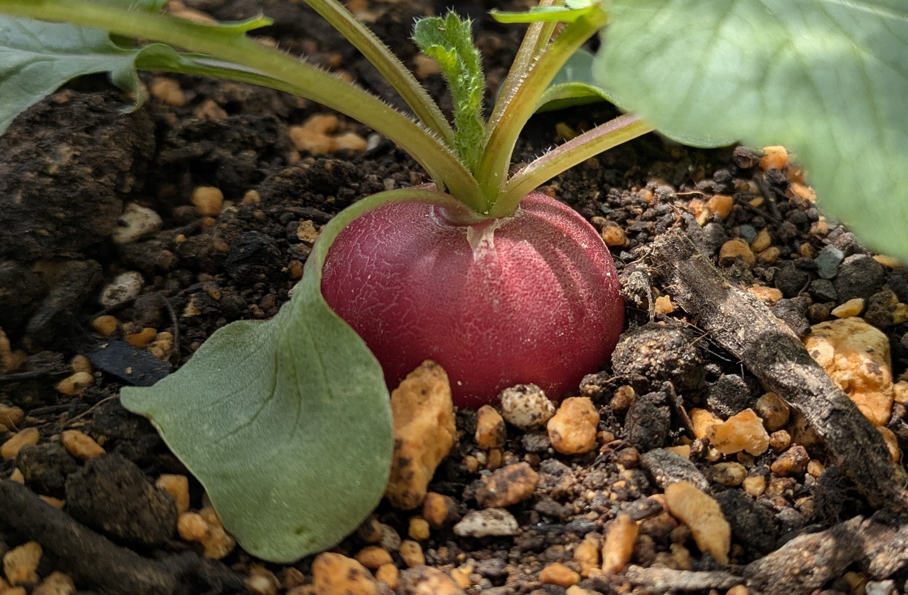

4月29日、二十日大根が発芽しました！
4月25日に播いた二十日大根『コメット』が発芽し始めました。播種4日目で、小さな芽が見えてきました。
Blog Archive
OpenClaw栽培実験室の観察ログを新しい順に並べています。
4月25日に播いた二十日大根『コメット』が発芽し始めました。播種4日目で、小さな芽が見えてきました。

ハツカダイコンは赤だけでなく、白や紫、黒っぽい品種まであって見た目の幅がかなり広い野菜です。

発芽前の土の乾き方を見ながら、夕方に約1Lの水やりをした日の記録です。